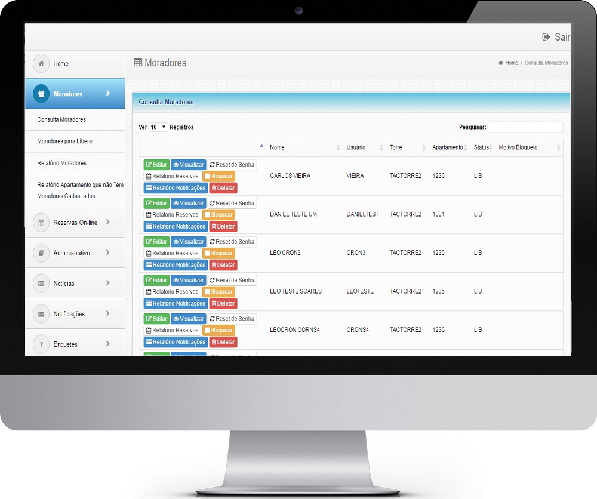

Moradores
Cadastro de todos os moradores do condomínio podendo ser acessado pela administração do condomínio de qualquer dispositivo precisando apenas de internet. Administre todos os dados dos moradores com a consulta moradores no painel administrativo do sistema. Relatórios de moradores com varias opções de filtros.